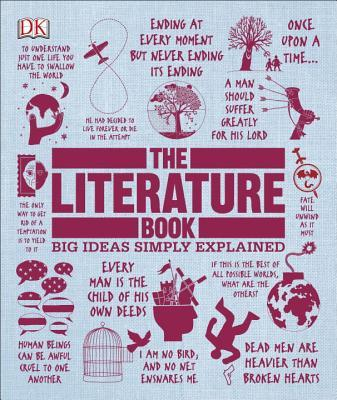

Description
Learn the basics of Literature. This course covers fundamental Literature concepts.
Chapter Content
Video
Resources

Learn the basics of Literature. This course covers fundamental Literature concepts.